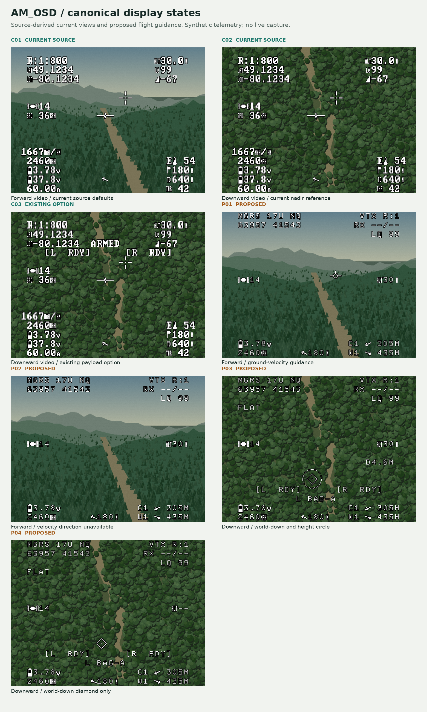

Authored report · Source / retained evidence in private GitHub repository ↗
Canonical OSD display references — 2026-11-04
These eleven states provide a reviewable visual reference for the existing analog OSD, proposed firefighting package guidance and TAK situational-awareness pages. Use the images with the development roadmap.
Current means a source-derived reconstruction; existing option means supported behaviour with assumed settings; proposed means a design that is not implemented. None is a live camera/OSD capture. Telemetry, sensor availability, forest backgrounds and package performance are synthetic fixtures.
Open the image gallery or the overview below. Every state includes a clean 960 × 720 frame, transparent overlay and 1560 × 1000 annotated reference. Annotation colour belongs to the document; the OSD itself is monochrome.
The gallery now includes an adjustable flat-ground GPS-height prototype.
Proposed flight displays omit the fixed FC crosshair. The forward view uses a velocity
marker. Downward, the diamond always marks world down from roll/pitch. Usable GPS height
adds a diameter-changing circle without moving diamond XY; without height the same diamond
remains alone. FLAT is the surface label; TER is reserved for actual height-grid use. Barometric
height is ignored. See the
model, height comparison and PCB storage assessment. C01–C03 preserve
the original source behaviour and are collapsed in the gallery for comparison.
All proposed flight views use the revised HUD: MGRS at top left,
VTX/RX/LQ at top right, satellites at middle left, height at middle right, cell/mAh at
bottom left, home arrow/distance at bottom centre, and the two nearest TAK markers
with relative arrows/ranges at bottom right. Proposed frames use the thinner
Fixed Medium 9x15 bitmap candidate; C01–C03 retain the current font.
The new TAK SA pages clear all legacy FC elements except average cell voltage. The overhead page centres an ownship arrow and rotates markers with aircraft azimuth; the forward fan plots longer-range contacts ahead. The gallery includes heading/range controls and an offline Normal / God's-eye / Radar AUX preview, mock landscape backgrounds, and an MGRS own-position / selected-marker card. All markers are synthetic.


Image catalogue
| ID | State | Clean frame | Annotated reference | Transparent overlay |
|---|---|---|---|---|
| C01 | Forward video, current defaults | PNG | Reference | Overlay |
| C02 | Downward video, current nadir | PNG | Reference | Overlay |
| C03 | Existing payload option | PNG | Reference | Overlay |
| P01 | Forward ground-velocity marker | PNG | Reference | Overlay |
| P02 | Forward low-speed state | PNG | Reference | Overlay |
| P03 | World-down diamond with height circle | PNG | Reference | Overlay |
| P04 | World-down diamond only | PNG | Reference | Overlay |
| P06 | TAK God's-eye SA | PNG | Reference | Overlay |
| P07 | TAK forward radar-style SA | PNG | Reference | Overlay |
| P08 | TAK marker feed stale | PNG | Reference | Overlay |
| P09 | TAK MGRS coordinate readout | PNG | Reference | Overlay |


P05 is retired: the nearly immediate camera change does not need a transition card. Other reference IDs remain stable. No transition page is proposed for normal switching.
Sources and reconstruction boundary
The baseline uses all 20 positions enabled in profile 1 of the retained F405/H7 combined
servo/camera CLI variants from RMUS-Canada/AMBetaflight- commit 29953a82. Those enabled
layouts match exactly. source-layout.json retains original paths,
full commit IDs, SHA-256 digests and packed positions. Original CLI bytes stay unchanged.
The numeric examples depict a hypothetical instrumented H7-like flight. A shared layout does not establish common sensor availability: the F405 migration's current-sensing configuration differs, for example. These are not observations of either installed unit.
The retained H7 CLI selects osd_displayport_device = AUTO. These images do not prove
whether an installation uses the FC's onboard OSD or external DisplayPort, and the onboard
font is not established. C01–C03 use AM_OSD's actual font, showing how AM_OSD would draw
the retained layout when receiving it. A saved FC/OSD readback and video capture are
needed to establish a particular installation's true current screen.
AM_OSD baseline: PR #2, head 2f1e4f8.
Sources: font, defaults,
nadir task, projector,
payload, renderer.
The documentation renderer decodes the actual 256-glyph, 12 × 18, 2-bpp table and compiles and calls the real C camera projector. It reconstructs the 28 × 28 nadir sprite from the firmware pixel rule. Proposed views decode the exported 9x15 candidate C table in the same 12×18/2-bpp format. It does not execute the FC OSD scheduler, capture video, simulate transport/interlace timing or establish optical registration.
This edition is PAL, 4:3, 30 × 16 cells, with zero grid offsets. It uses the inherited 52 µs active width, 13.1 µs grid start and 288 field-line mapping. The 360-pixel character canvas spans about 860 of the 960 displayed horizontal pixels. White/black pixel patterns come from firmware; brightness/noise/display response are not electrical calibration. NTSC and 16:9 references are outside this edition.
Retained profile-1 layout
Coordinates are zero-based character positions. Sensor/build/runtime prerequisites can still make an enabled item unavailable. The nominal warning region is empty. Fly mode, timer and compass bar are not enabled in this retained layout.
| Existing element | Column | Row | Reference content |
|---|---|---|---|
| VTX band/channel/power | 1 | 1 | R:1:800, synthetic VTX labels |
| Estimated relative altitude | 23 | 1 | Altitude glyph, 30.0, m |
| Latitude | 1 | 2 | Four fractional digits, as selected by stored variant |
| Link quality | 23 | 2 | GHST-style quality glyph, 99 |
| Longitude | 1 | 3 | Four fractional digits |
| RSSI dBm | 23 | 3 | RSSI glyph, -67 |
| GPS satellites | 1 | 6 | Two satellite glyphs, 14 |
| GPS speed | 1 | 7 | Speed glyph and metric speed |
| Fixed FC crosshair | 13 | 7 | Actual three-glyph centre reference |
| Electrical efficiency | 0 | 11 | 1667 mAh/km in nominal fixture |
| Consumed capacity | 1 | 12 | 2460 mAh |
| Warning region | 9 | 12 | Blank nominally; proposed failure text uses this area |
| ESC temperature | 25 | 12 | E, thermometer, 54, °C; final unit cell clips |
| Average cell voltage | 1 | 13 | Battery glyph, 3.78 V |
| Home distance | 25 | 13 | Home glyph, 180 m |
| Pack voltage | 1 | 14 | Battery glyph, 37.8 V |
| Home direction | 14 | 14 | Existing direction arrow |
| Distance flown | 25 | 14 | Total-distance glyph, 640 m |
| Current | 0 | 15 | 60.00 A, hypothetical valid current sensor |
| Throttle | 25 | 15 | Throttle glyph, 42 |
AM_OSD defaults select Generic 132°, top facing forward, 4:3, zero trim, full brightness and Always. C01/C02 use roll +12°, pitch 15° nose down. The moving AM nadir marker therefore appears in both views. C01 deliberately exposes the absence of camera-aware gating: the downward projection is drawn over forward video. It is not a forward vector.
The default payload ARM channel is unset, so C01/C02 show no payload text. C03 assumes ARM and both station channels are configured, with mirrored state ARMED and both stations ready. The existing heading occupies row 3, station boxes row 4. The heading fits the spare centre space beside the retained four-decimal coordinates. RDY/REL/empty are switch/timer inferences, not package-presence or detachment feedback.
Proposed drawing contract
| Feature | Reference | Required work |
|---|---|---|
| Surface identity | FLAT; future TER only for actual height-grid use |
No CCIP ADVISORY, DOWN, FWD or GPS VEL notifications |
| Ground-velocity direction | Circle, wings and top stem in P01 | 3-D ground velocity, valid heading, forward lens/mount calibration |
| Low-speed state | No vector or warning banner in P02 | Measured threshold/hysteresis; fixture 0.2 m/s is illustrative |
| World-down reference | Same diamond and centre dot in P03/P04 | Attitude-only unit-ray projection; no altitude/velocity displacement |
| Circle scale | Height-dependent screen circle, D4.6M at the default fixture |
Assumed additive error budget; no impact/confidence claim |
| Height reference | Middle-right altitude and FLAT |
GPS altitude minus same-datum ground reference; assumes a horizontal plane |
| Missing GPS height | Larger diamond only, no circle or text banner in P04 | Attitude-projected vertical reference; no ranged moving-impact claim; barometer ignored |
| Base telemetry | Corners, middle edges and bottom-centre navigation | Layout and unavailable-field policy; FC/OSD integration remains planned |
P01 uses an illustrative Generic 132° forward lens, fixed body-forward camera, 12° nose
down attitude and NED velocity (10, 2, 1) m/s. It does not reuse a downward Justice fit
for another camera. The fixed FC crosshair and separate vertical-speed readout are removed.
P03/P04 use the experimental Justice OpenCV downward fit, roll −4° and pitch 15° nose up.
P03/P04 assume a stationary vehicle at release over a flat reference plane. BAG-A
is a placeholder. The diamond is always world down; there is no nominal speed, release-
delay compensation or finite trajectory point. The circle model uses
only an illustrative base/drift allowance for scale. True CCIP is deferred and outside
the current implementation scope.
The proposed downward view uses station boxes on row 12 and station/profile identity on row 13, keeping the larger diamond clear. It suppresses the FC fixed crosshair. The proposed flight base layout uses the requested readout groups. The historical source-layout table above continues to describe C01–C03. SA pages retain their separate voltage-only policy. Forward and downward views have no fixed centre cue. Both P03/P04 diamonds are the same world-down vertical reference, not the former crosshair sprite or a ballistic impact point. Removing the FC crosshair in a device installation needs a reviewed FC layout/configuration change; no delivered CLI is edited here. New glyphs, GPS/reference inputs and labels remain prototype features with PCB implementation deferred.
The world-down symbol region clears payload text. Production logic must maintain a clear guidance area as symbols move: hide/relocate secondary labels or use a distinct off-screen cue. Do not clamp an off-screen vector/impact point to an edge as if it were on-image.
Reproduce and verify
Linux requirements: Python 3, Pillow, native cc and DejaVu Sans. No raw footage, online
assets, Arm SDK, FC or OSD hardware is needed. From repository root:
python3 tools/render_osd_reference.py
python3 tools/render_osd_reference.py --check
python3 -m unittest discover -s tests -v
Optionally verify original CLI hashes and positions against a local AMBetaflight checkout:
python3 tools/render_osd_reference.py --check --fc-repo /path/to/AMBetaflight
manifest.json records source hashes, per-frame glyph codes/coordinates, marker coordinates, clipped cells, PNG sizes and SHA-256 digests. The check regenerates temporarily and compares generated bytes. Current frames retain one clipped ESC unit cell; proposed frames have no clipped text cells. The missing-height state retains only an un-ranged drop-reference diamond, without a circle. The additional height fixtures and interactive model are recorded in the manifest alongside the canonical states.
When font/projector/defaults, layout or drawing policy changes, review the effect, regenerate, inspect all eleven references and update the assumptions. Preserve historical captures separately. Host checks do not establish live timing, registration or drop accuracy.
Verified for this edition on 2026-11-03:
- Original F405/H7 CLI hashes and all 20 matching enabled positions checked.
- All 46 PNGs and the manifest regenerated byte for byte; clipping/text-overlap, diamond-only fallback and circle-suppression checks passed.
- All eleven annotated states visually inspected; annotations keep the symbols readable.
- Six existing host camera/settings/protocol tests passed.
- Local documentation/gallery links checked.
- Updated gallery checked at 1440 px and 390 px: all images loaded, no overflow or browser exceptions; altitude control changed geometry and invalid/missing inputs retained the reference diamond without a circle.
- Twelve browser geometry cases matched the real C projector/Python model exactly at the recorded native positions and screen radii. Datum-translation and height-error sensitivity checks passed. All nine original current-state PNGs kept their hashes.
- AMBetaflight's complete offline verifier passed; original evidence/bundle bytes remain intact. No AM_OSD firmware source was changed.
Physical camera, selector, heading, release and flight checks remain open.
The SA extension passed 64 heading/range/render cases, 12 cross-language geometry cases (native-coordinate difference below 1e-9), forward-fan filtering, off-scale/expiry/stale-feed checks, three-position preview switching, label-boundary checks and verification that average cell voltage is its only retained FC element. At 1440 px and 390 px, all 13 gallery images loaded without overflow or browser exceptions. These are concept checks; no live TAK/AUX/PCB operation occurs here.
The latest revision checks camera-independent TAK layouts over both mock backgrounds, MGRS own/selected readouts and stale-coordinate clearing, diamond-only height fallback, and the revised flight HUD. Both downward diamonds are larger, with no DROP REF label; low-speed vector suppression has no warning banner. P05's transition card is retired. No firmware, FC settings, hardware, PR or publication is changed by these local documentation updates. The enlarged-diamond layout also passed a sweep of all 117 integer GPS heights from 4–120 m under the default ±3 m model: neither the diamond nor its black outline overlaps a HUD text cell. This checks the synthetic projection/layout, not a flight envelope.
The navigation/font revision verified all 46 PNGs plus the candidate C/binary by deterministic regeneration, 206 local links, 64 SA render combinations, 360-heading nearest selection, arrow cardinal directions, expiry/tie/invalid/zero-range cases, undimmed God's-eye background pixels and ARM table-byte equality. Browser checks at 1440/390 px loaded all 13 gallery images without overflow or exceptions. The nine current-source PNG hashes and six host regressions remain preserved/passing.
2026-11-04 world-down revision
The diamond is now always the attitude-projected world-down ray in both downward states.
Altitude, reference height, speed and release timing do not translate it. Circle scale
uses height; no usable height hides only the circle. Surface text is FLAT today, with
TER reserved for real height-grid use; CCIP ADVISORY is removed. Roll/pitch controls
in the gallery demonstrate the only inputs that change diamond XY. The legacy P03 file
slug contains ccip for link stability; these frames no longer claim a finite impact point.
The current use assumption is stationary release. Nominal 4 / 1.5 m/s speed and timing compensation have been removed from the sample model. True CCIP remains future work, not part of the current display implementation.
Verified for the 2026-11-04 revision: 117 integer height cases keep diamond XY identical; 12 height/error and six attitude browser/C cases agree on native position and circle radius. Roll/pitch controls move the diamond; altitude and height-reference loss do not. All 46 PNGs/C/binary outputs reproduce, nine historical baseline PNGs remain byte-identical, 206 local links pass, desktop/mobile previews have no overflow/script errors, and all six existing host tests pass. These are offline checks, not installed stationary-drop acceptance.